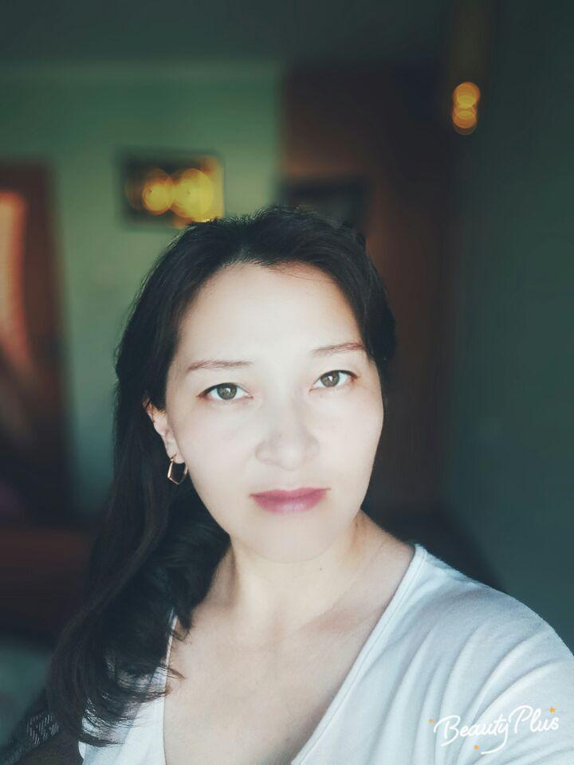

Обо мне
 Здравствуйте! Я мама четырех детей. Я родилась в 1983 году 16 марта в г. Петропавловск. Сейчас живу в г. Шымкент. С прошлого года начала работать в компании BIOSEA, где вы можете пролистать и найти информацию внизу.
История о компании
 История Компании BIOSEA началась с рождения Лаборатории BIOSEA в Бретани, живописном районе Франции, на побережье Кот-д'Армор, богатом разновидностями водорослей и морских растений, обладающих удивительными и разнообразными косметическими свойствами.
История Компании BIOSEA началась с рождения Лаборатории BIOSEA в Бретани, живописном районе Франции, на побережье Кот-д'Армор, богатом разновидностями водорослей и морских растений, обладающих удивительными и разнообразными косметическими свойствами.
Лаборатория BIOSEA была основана доктором фармацевтических наук Селин Лангле в 2003 году после трех лет исследований и разработок. 10 лет своей жизни Селин Лангле посвятила фармацевтике, получая вдохновение от природных свойств трав, и испытывая восторг от искусства создания и использования ароматерапии и косметики.
Миссия компании

Миссия компании BIOSEA получила отображение в слогане «le charme au naturel»: «Сохраним и подчеркнем натуральный шарм, заложенный в человеке природой».
Ускоренный темп жизни и ухудшение экологии больших городов приводят к росту наблюдаемых проблем кожи, развитию аллергических реакций и различного рода непереносимости обычных косметических средств, в основе возникновения которых лежат синтетические активные ингредиенты.
Благодаря откликам клиентов, Селин Лангле чётко осознала требования современных женщин к эффективности и, особенно, к безопасности продукции для себя, своих детей и близких.